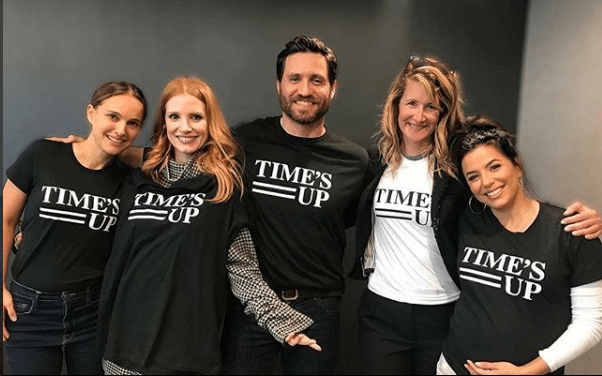
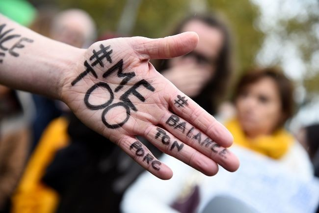
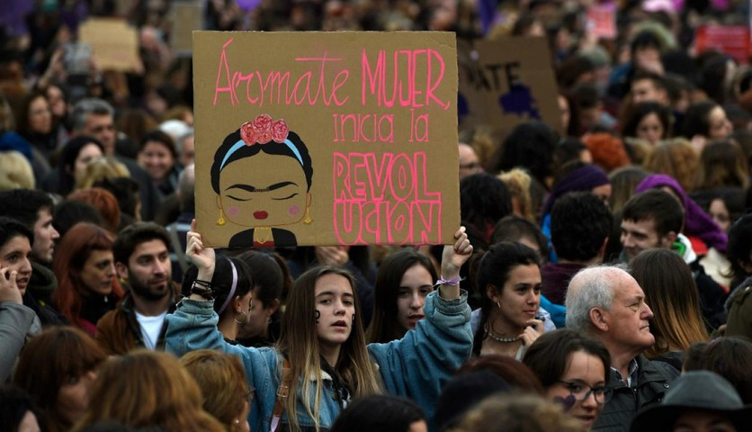
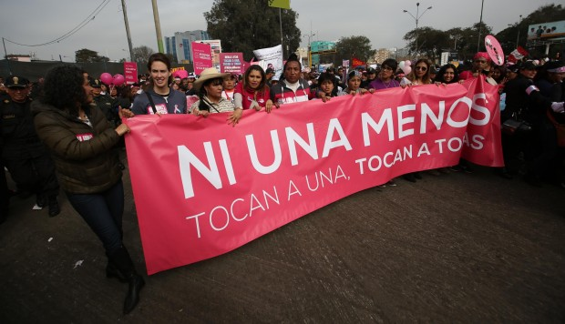
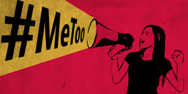
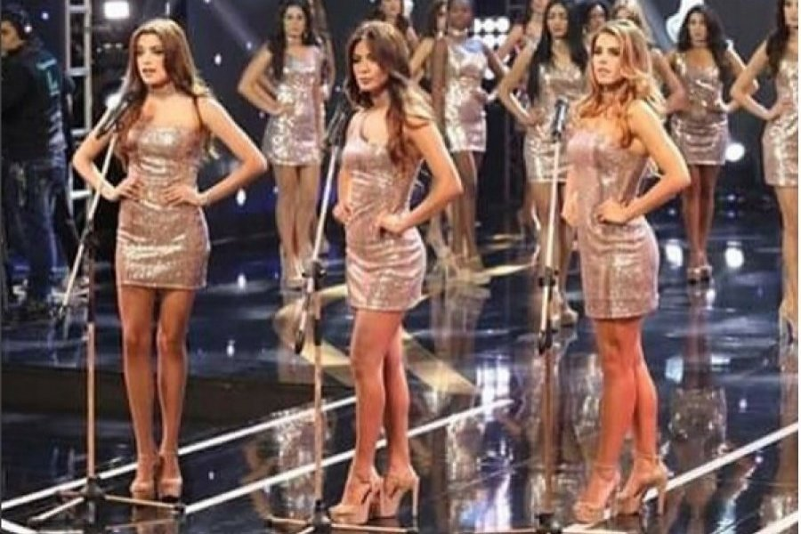

Alrededor del Mundo, seguimos luchando
| 
Como esta lucha apenas empieza, el 1 de enero de 2018 nació el movimiento
Time's Up,encabezado por actrices de Hollywood como Natalie Portman, Nicole Kidman, Emma Watson,
Jennifer Aniston, Eva Longoria o Reese Witherspoon. Time’s Up busca lograr una legislación que
penalice a las empresas que toleren el acoso y una ruta para alcanzar la equidad de género. Para
ello han creado un fondo —que comenzó con 10 millones de euros— para sustentar la defensa
legal de aquellas víctimas con menos privilegios. |

Gracias a este último, en Francia se impulsó el movimiento #BalanceTonPorc —#DelataATuCerdo
—. Fue la periodista Sandra Muller quien denunció vía Facebook que fue acosada por el antiguo director
general de la cadena de televisión Equidia, Eric Brion. Esta iniciativa ha servido para "liberar la palabra
de las víctimas y poner el foco en un verdadero problema de la sociedad". |

Meses después, el 7 de noviembre del año 2015 en España miles de mujeres y con aliados hombres acompañándolas, ocuparon las calles de Madrid con la Marcha Estatal Contra las Violencias Machistas. Tras la marcha algunas de sus participantes optaron por constituirse de manera permanente como "7N Plataforma Feminista Contra las Violencias Machistas" para formar parte de la agenda política, y así dar seguimiento a las reivindicaciones planteadas en el manifiesto —la violencia machista, la discriminación laboral de la mujer y brecha salarial—. |
Una de las regiones con mayor índice de violencia contra la mujer es América Latina. NiUnaMenos es una respuesta por la defensa de la vida de las mujeres contra la violencia constante y cotidiana. Se realizó por primera vez el 3 de junio de 2015 en 80 ciudades de Argentina, producto de la muerte de una adolescente de 16 años (Lucia Pérez) en la provincia de Buenos Aires. Las manifestaciones se repitieron en 2016 y en el 2017, logrando hacer eco en países como Uruguay, Perú, México, España, Colombia, Chile, Ecuador, Bolivia, Paraguay, Venezuela e Italia. |
 El 15 de octubre de 2017 que la actriz Alyssa Milano se animó a utilizar esta frase en el marco de una campaña de concienciación vía Twitter para denunciar el ya conocido caso Weinstein. Esto logró unir a miles de mujeres que alguna vez han sido acosadas, para dar credibilidad y visibilidad a las víctimas de los casos más graves. Testimonios de artistas como Ashley Judd, Mira Sorvino, Angelina Jolie o Gwyneth Paltrow contra Weinstein continuan animando a miles de mujeres anónimas que, bajo el hashtag #Metoo, han roto el silencio y han compartido sus casos.. |
Perú estuvo en los ojos del mundo luego del certamen Miss Perú del año 2018, en el cual las participantes compartieron datos sobre la violencia a la mujer en el pais y el mundo. Lo inusual fue que lo hicieron en el momento de su presentación. |